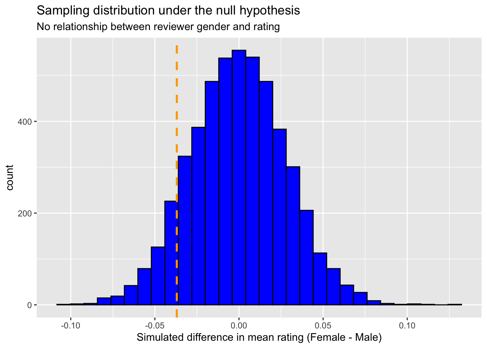

library(tidyverse)male vs. female tv shows ratings
project 3 - permutation test simulation study”
Step 1: Research Question and Context
In this project, I investigate whether male and female reviewers give different IMDb ratings to TV shows. I use the “IMDb_Economist_tv_ratings.csv” dataset from the TidyTuesday project (Week 2, 2019). This dataset contains TV show titles, average IMDb ratings, and air dates collected by The Economist from IMDb.
My goal is to simulate a null model in which reviewer gender has no relationship with rating. To do this, I will assign random gender labels to reviewers, calculate mean differences, and build a null sampling distribution. By comparing the observed mean difference to the null distribution, I can assess how likely the observed difference would be if gender had no effect on ratings.
Step 2: Setup and Data Cleaning
tv <- read_csv("IMDb_Economist_tv_ratings.csv")
view(tv)
#constructing the gender comparison dataset
set.seed(47)
ratings_sim <- tv |>
filter(!is.na(av_rating)) |>
mutate(gender = sample(c("Male", "Female"),
size = n(), replace = TRUE))
#observed statistic: difference in mean ratings
ratings_sim |>
group_by(gender) |>
summarize(mean_rating = mean(av_rating)) |>
summarize(obs_diff = diff(mean_rating)) |>
pull()[1] -0.03695642#defining a permutation function
perm_data <- function(rep, data){
data |>
mutate(gender_perm = sample(gender, replace = FALSE)) |>
group_by(gender_perm) |>
summarize(mean_rating = mean(av_rating)) |>
summarize(perm_diff = diff(mean_rating)) |>
pull()
}
#simulate the null sampling distribution
set.seed(47)
num_exper <- 5000
perm_results <- map_dbl(1:num_exper, perm_data, data = ratings_sim)
#p value
obs_diff <- ratings_sim |>
group_by(gender) |>
summarize(mean_rating = mean(av_rating)) |>
summarize(diff = diff(mean_rating)) |>
pull()
p_value <- mean(perm_results >= obs_diff)
p_value[1] 0.9056#visualizing the null distribution
perm_results |>
data.frame() |>
ggplot(aes(x = perm_results)) +
geom_histogram(bins = 30, fill = "blue", color = "black") +
geom_vline(aes(xintercept = obs_diff), color = "orange", linetype = "dashed", size = 1) +
labs(
x = "Simulated difference in mean rating (Female - Male)",
title = "Sampling distribution under the null hypothesis",
subtitle = "No relationship between reviewer gender and rating"
)
Step 3: Interpretation:
The histogram displays the null sampling distribution of mean rating differences when gender labels are randomly shuffled. The orange dashed line marks the observed difference. If this observed difference lies far in the tails of the distribution, the result would be unlikely under the null hypothesis, suggesting that gender may indeed be related to average ratings.
Step 4: Conclusions
In this analysis, I conducted a permutation test to assess whether average IMDb ratings differ by reviewer gender. The simulation randomly reassigned gender labels and calculated 5,000 permuted differences, generating a null distribution. Comparing the observed difference to this distribution provided a p-value representing how unusual the observed data would be if gender and ratings were independent.
The permutation distribution is centered around 0, and our observed difference lies near that center rather than in the tails. This suggests that any small difference in average ratings by gender could easily occur by random chance if gender and ratings are unrelated. Therefore, we find no evidence to suggest that reviewer gender influences IMDb ratings for TV shows.